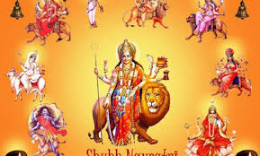

Navaratri (literally "nine nights"), also spelled Navratri or Navarathri, is a nine nights (and ten days) Hindu festival, celebrated in the autumn every year. It is observed for different reasons and celebrated differently in various parts of the Indian subcontinent.
In the eastern and northeastern states of India, the Durga Puja is synonymous with Navratri, wherein goddess Durga battles and emerges victorious over the buffalo demon to help restore Dharma.